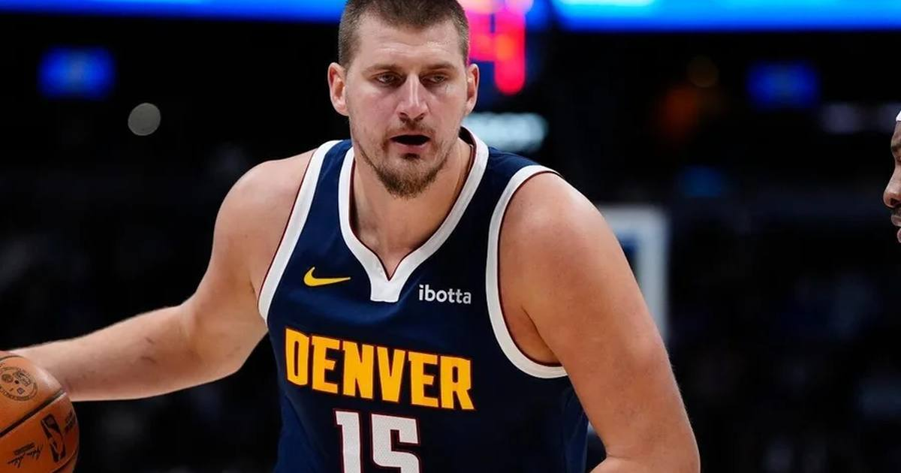

Jokic's 199th Triple-Double, Murray's 42 Power Nuggets' 23-Point OT Comeback
Nikola Jokic posted 35 points, 15 rebounds and 10 assists — career triple-double No. 199 — and Jamal Murray scored 42 as Denver rallied from 23 down to beat New Orleans 141-135 in overtime.

Disclosure: this post contains affiliate links. I earn a commission on qualifying purchases.
Down 23, down 19 entering the fourth, down eight with 1:37 left — and Denver won anyway. Nikola Jokic recorded 35 points, 15 rebounds and 10 assists and Jamal Murray poured in 42 as the Nuggets rallied past the Pelicans 141-135 in overtime on Saturday night at Ball Arena.
The comeback
New Orleans led 53-30 midway through the second quarter and 124-116 with 1:37 left in the fourth. Then Jokic and Murray hit threes, Aaron Gordon threw down a dunk, and Murray — fouled on a three-point attempt — made two of three free throws with 16 seconds left to tie it at 126.
In overtime, Jokic's free throws gave Denver its first lead since the first quarter, and rookie Trevon Brazile scored seven of his 17 points in the extra period, including a corner three for a 133-129 lead with 1:25 left.
The milestone
Jokic's triple-double was the 199th of his regular-season career — second all time behind just-retired Russell Westbrook's 209. Jokic reached it in 12 seasons; Westbrook needed 18.
Nikola Jokic: 35 points, 15 rebounds, 10 assists
Jamal Murray: 42 points
Final score: Nuggets 141, Pelicans 135 (OT)
Career triple-doubles: Jokic 199, Westbrook 209
Trey Murphy III led New Orleans with 26 points, Dejounte Murray had 22, and Zion Williamson and Derik Queen scored 17 each. The Pelicans fell to 0-3.
Why it matters
This is the Jokic chase in real time: ten triple-doubles away from Westbrook's record, and doing it while dragging a short-handed team back from 23 down. Denver played without Cam Johnson (ankle), Alpha Diallo (sprained wrist), Julian Strawther and Spencer Jones — and still found a way.
Gear up: Fanatics